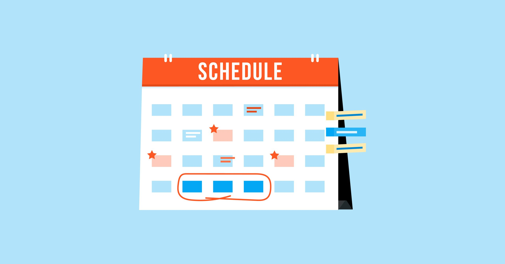

Create a Study Schedule
Establish a study schedule that allocates specific times for studying each subject. Break your study sessions into manageable chunks, and include breaks to avoid burnout. Using tools like calendars or apps can help you stay organized and committed to your study plan.
